足立美術館で紅葉狩り（お散歩カメラ 2025-11-24）

- 由志園で紅葉狩り
- 松江城で紅葉狩り
- 足立美術館で紅葉狩り ← イマココ
さて，今月2回目の三連休の最終日，如何お過ごしでしょうか。
今日はお天気が微妙なのだが，かねてから計画していた「足立美術館で紅葉狩り」を実行することにした。
朝のうちにちょっと用事を済ませるついでにドラッグストアで，水と補給食を調達。 なんか変なもん売ってるな。
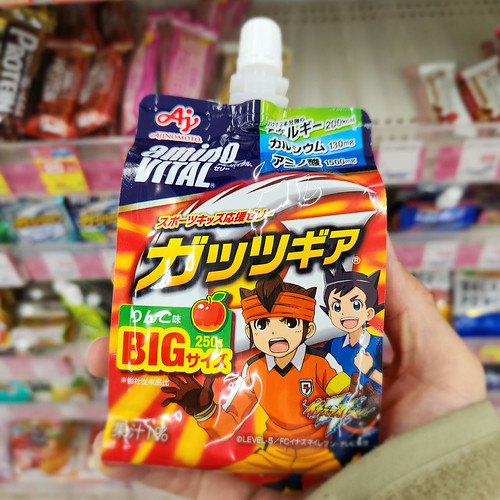
ちょっと買いそうになったが，これひとつで 200kcal は私には多すぎるので（半分なら2つ買うのに）諦めた。
ほんじゃあ出掛けようか。 大山を拝みつつ中海沿いを東進する。
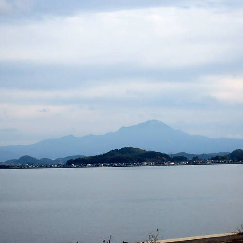
ありゃ。 山頂付近の雪が消えてるねぇ。
安来市に入った。
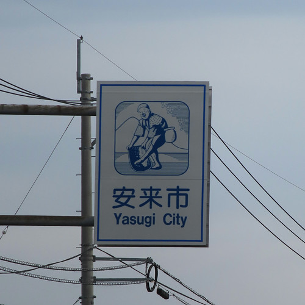
さらに東進。 JR荒島駅前の通りを抜け
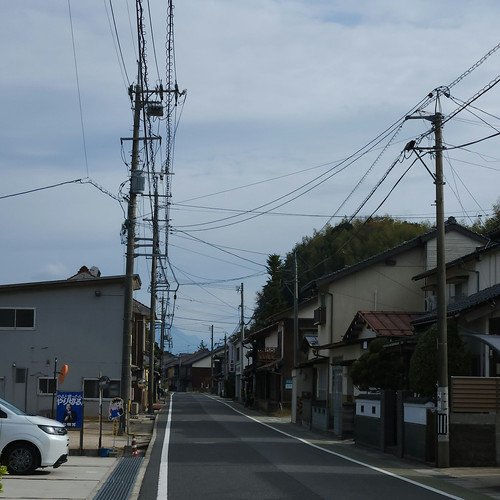
次は南下。 月山方面は3回目なのでサイコンのナビ先生に頼らなくても慣れたものっスよ。 安来節演芸館に到着したので，腹ごしらえしておく。
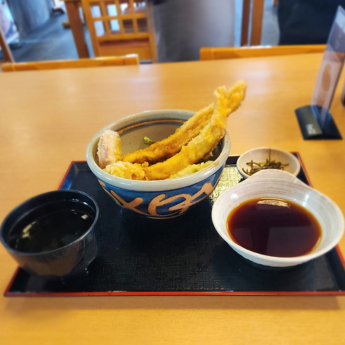
お腹が落ち着いたところで，いよいよ足立美術館に行くか。
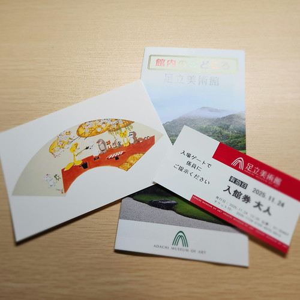
写真に写ってるポストカードは帰り際にミュージアムショップで買ったもの。 最近は美術館に行った記念にポストカードを買うのがマイブームである。
足立美術館には子供の頃に親に連れられて行った覚えがあるけど「横山大観すげー（←巨大サイズの絵を見た感想）」くらいの印象しかなくて，庭がどうだったかなんてさっぱり覚えてないんだよな。 まぁ，子供の感性で日本庭園の良さが分かったら，それはそれで末恐ろしいが（笑）
足立美術館は横山大観のコレクションで有名だけど，庭園の方は彼の作品を模して造られているそうな。 前に行った由志園は庭園の中を散策する感じだったけど，足立美術館の庭園は建物の中から鑑賞するスタイル。 美術作品を観る感じだろうか。 まぁ，美術館だしな。
なお，庭園は写真撮影可だそうな。
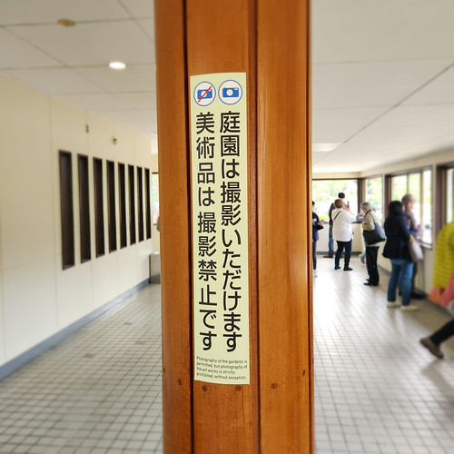
それでは，紅葉狩りを始めよう。
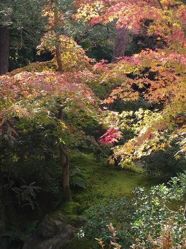
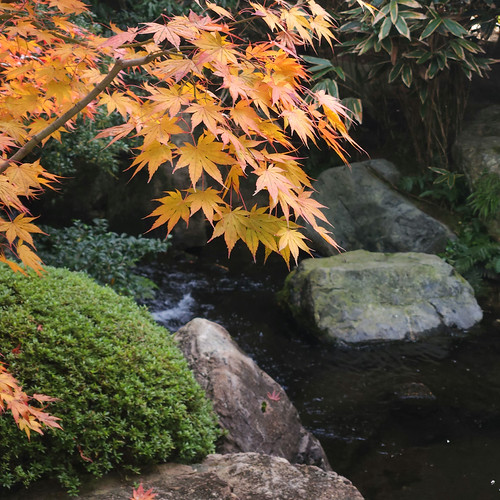
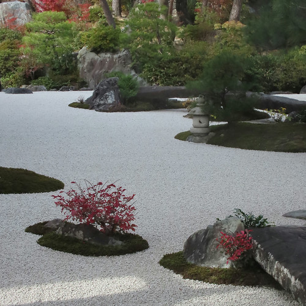
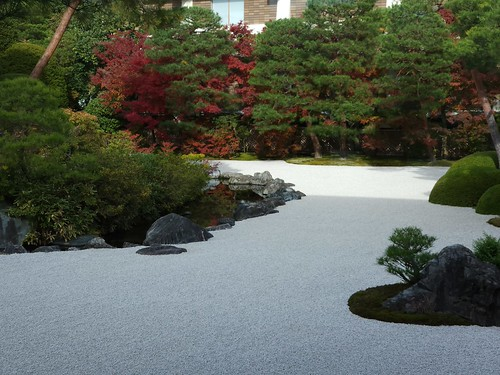
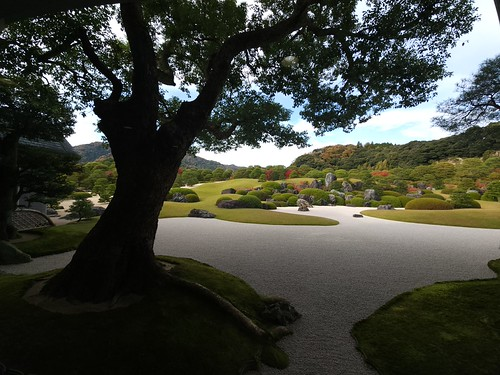
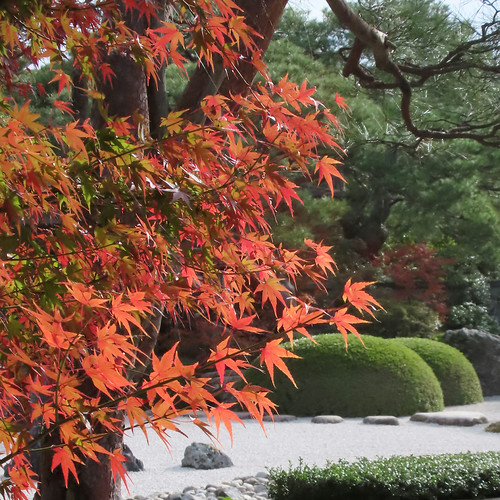
個人的にいちばん刺さったのは，本館から新館を繋ぐ通路の途中にあったこれ。
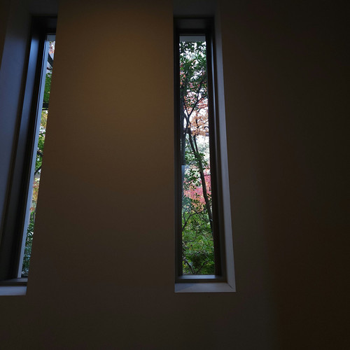
完全に油断してたところに，これは卑怯やろ。 慌ててカメラを構え直したわ（笑）
足立美術館の庭園って緑の景色に紅葉の差し色が入ってる感じ。 たとえば，そこらじゅう紅葉だらけの宮島の紅葉谷とかとはだいぶ趣きが違う。
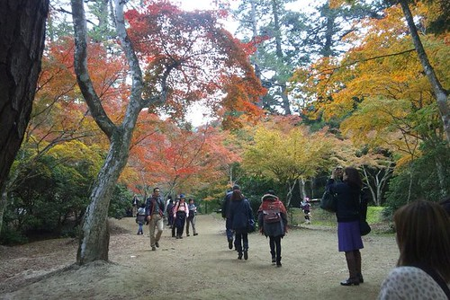
まぁ，四季を問わず観に来いってことなんだろう，多分。
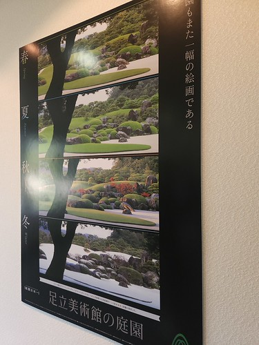
背後の借景も素晴らしいよね。 あの山々で尼子と毛利が戦ったんよねぇ。
美術作品に関しては現在「秋季特別展」が開催中である（撮影不可なので写真はご容赦）。 特に横山大観の「紅葉」は圧巻で，さすが足立美術館って感じである。 紅葉の紅と水の青の対比が凄いが，私としては緑色が好きなので，紅と青を繋ぐ緑の配色に惹かれてしまう。 緑が好きなのは漫画家の竹本泉さんの影響だと自覚があるが，改めて「緑っていいなぁ」と思ったり。
ひと通り観て回ったら15時になっていた。 今から帰れば日没に間に合うだろう。 その前に足立美術館の駐輪場の場所を確認しておく。
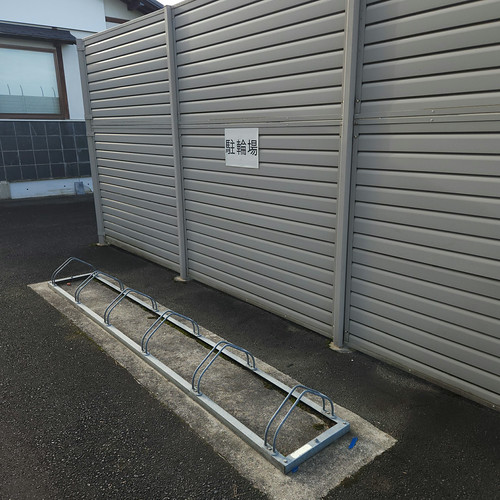
駐輪場が分からなくて今回は安来節演芸館の駐輪エリアに駐めたのだが，次回からはここに駐めることにしよう。
さぁ松江市内に帰ろう。 宍道湖まで一気に戻る。 変な雲が出てるなぁ。
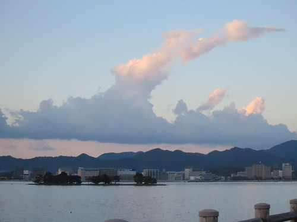
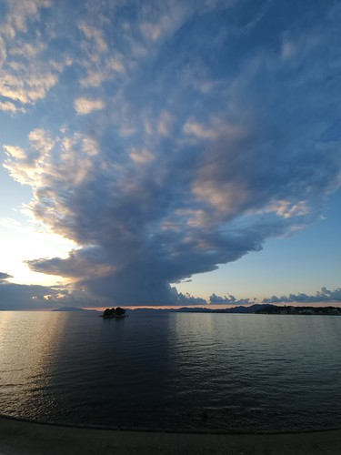
宍道湖沿岸に結構な数の観光客がいるんだけど，日没間際の夕日は拝めなさそう。 明日は西日本は黄砂予報だが，雨降りでもあるんだよなぁ。 これは自宅に引きこもるしかないな。
これで今年行きたかった紅葉狩りスポットは制覇したかな。 山の方へ行けばもっと凄いスポットもあるんだけど，私の今の脚力・体力では辿り着けないので，こんなもんだろう。 来年はもっと遠くに行けるようになるといいねぇ。
ブックマーク
参考

- Canon コンパクトデジタルカメラ PowerShot ZOOM 写真と動画が撮れる望遠鏡 PSZOOM
- キヤノン (Release 2020-12-10)
- エレクトロニクス
- B08L4WKDZ7 (ASIN), 4549292179675 (EAN)
- 評価
望遠鏡型コンパクトデジカメ。メモリと充電器（要 Power Delivery）は別に用意する必要がある。使い勝手はまぁまぁ。

- GARMIN(ガーミン)Edge Explore 2 Power サイクルコンピューター【日本正規品】
- ガーミン(GARMIN) (Release 2022-09-22)
- スポーツ用品
- B0BD7FGVR6 (ASIN), 0753759310660 (EAN), 753759310660 (UPC)
- 評価
Garmin 製のルート探索・ナビゲーション特化のサイコン。タッチパネル助かる。充電ポートは USB-C (not PD)。また別売りの変換ケーブルを使いモバイルバッテリからパワーマウント経由で給電することもできる。ライドタイプが「ロード」「屋内」「グラベル」の3種類しかない。 Live Segment 非対応。

- 竹本泉・WORLD―竹本泉画集
- 竹本 泉 (著)
- 竹書房 1994-09-01
- 大型本
- 4884759222 (ASIN), 9784884759223 (EAN), 4884759222 (ISBN)
- 評価
竹本泉さん初のカラー画集。「なかよし」時代最初期の作品から『ねこめ〜わく』『さよりなパラレル』まで。他，小説の挿絵やゲーム「ゆみみみっくす」も収録。なんと，故和田慎二さんとの対談もあるぞ！

- アポカリプスホテルぷすぷす (バンブーコミックス)
- 竹本泉 (著), ホテル銀河楼 管理部 (企画・原案)
- 竹書房 2025-07-07 (Release 2025-07-07)
- コミック
- 4801986919 (ASIN), 9784801986916 (EAN), 4801986919 (ISBN)
- 評価
アニメ「アポカリプスホテル」のキャラクタ原案を担当した竹本泉さんによる公式コミカライズ？ でも内容はいつもの感じ。ちなみに電子版はカラーのあとがきが追加されている。両方買わないと。いやぁ，竹本泉さんが関わってホンマにアニメになったんだねぇ（笑）

- アワータイムイエロー
- ReGLOSS (メインアーティスト)
- hololive RECORDS 2025-09-14 (Release 2025-09-14)
- MP3 ダウンロード
- B0FNVV83KN (ASIN)
- 評価

- 落噺 (儒烏風亭らでん SOLO)
- ReGLOSS (メインアーティスト)
- cover corp. 2025-08-03 (Release 2025-08-03)
- MP3 ダウンロード
- B0FKB9Y1GL (ASIN)
- 評価
「おとしばなし」と読むらしい。語るように歌い，歌うように語る。「儒烏風亭らでん」らしい秀逸な作品。 mora で高解像度版が買える。